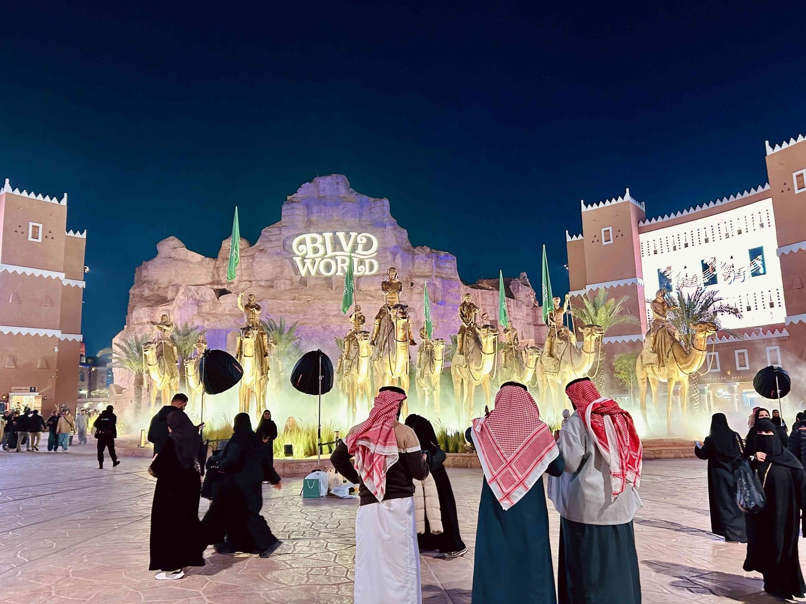
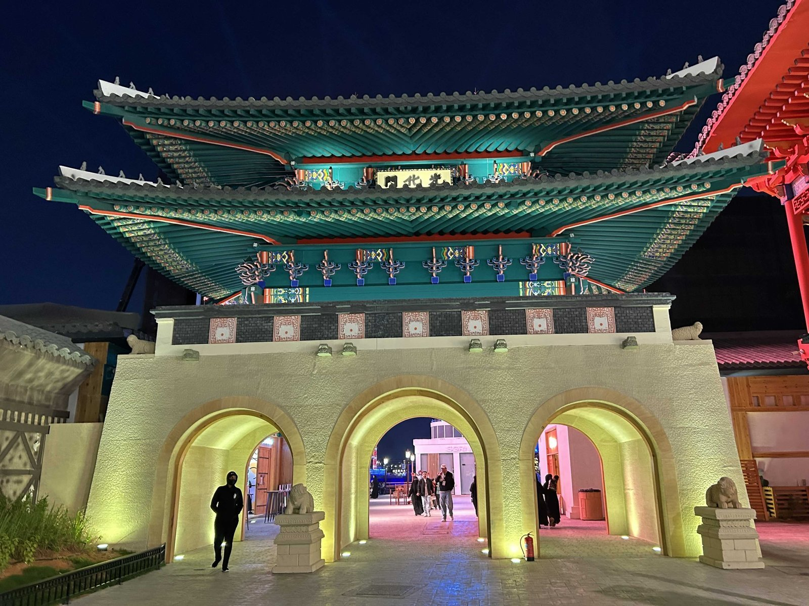
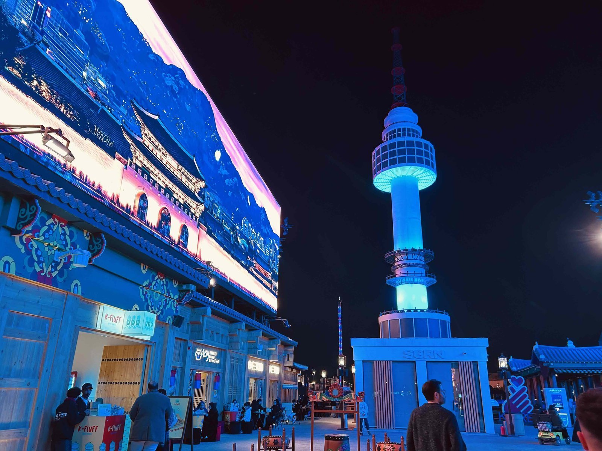
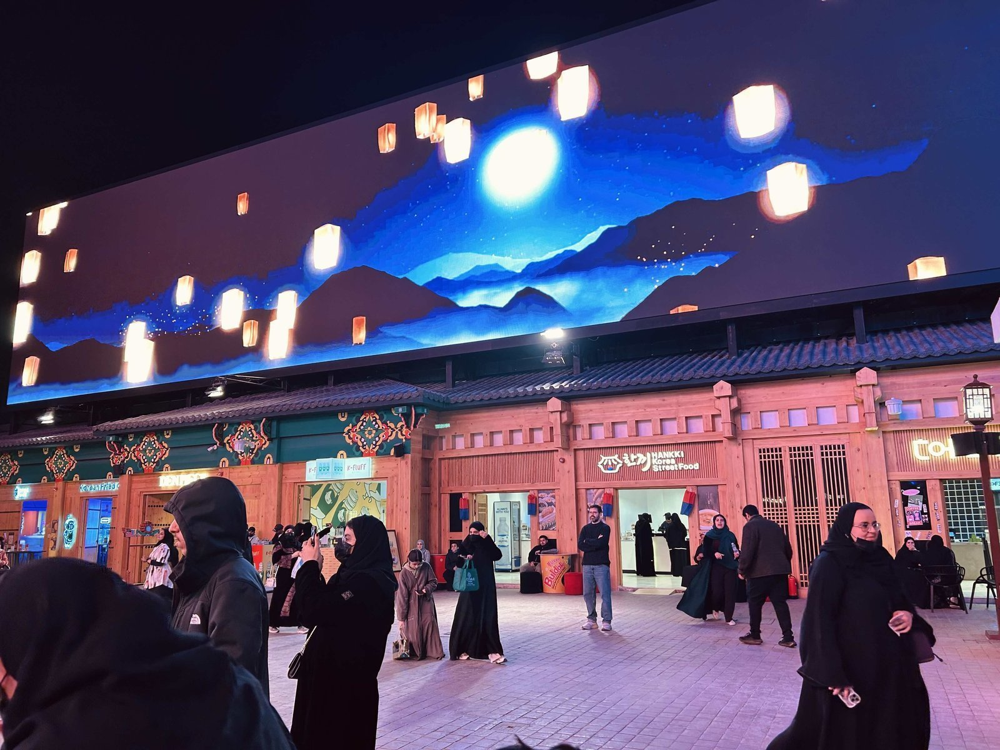
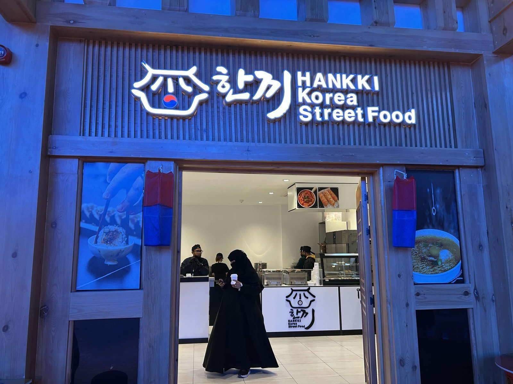
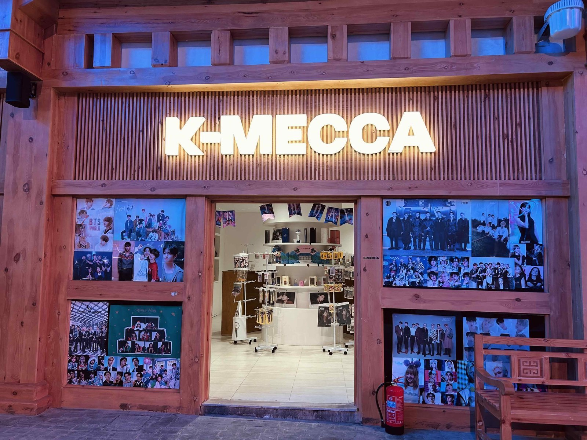
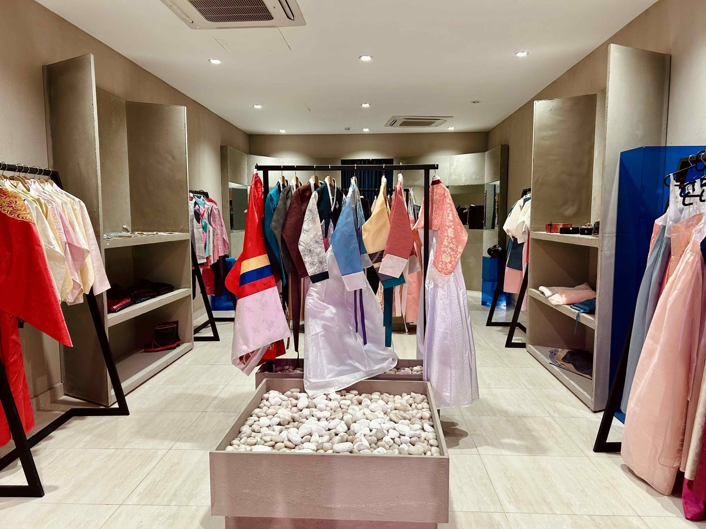
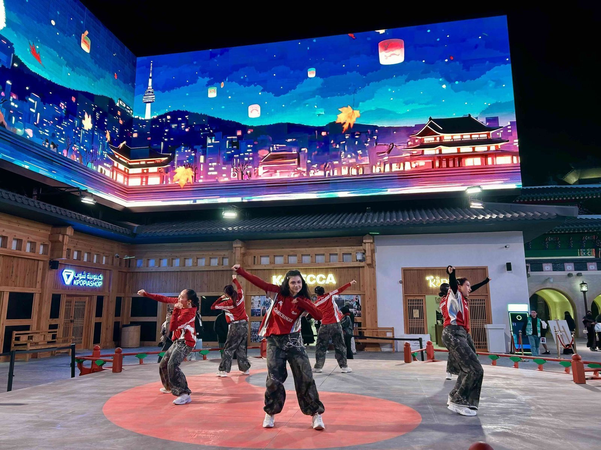

사우디아라비아 수도 리야드(Riyadh)에 위치한 블러바드 월드(Boulevard World)는 매년 리야드 시즌(Riyadh Season)이라는 행사를 여는데, 이 행사는 문화·엔터테인먼트·관광을 결합한 대규모의 국가 프로젝트이다. 수 개월에 걸쳐 상시 운영되는 이 행사는 다양한 공연과 전시, 테마존을 통해 세계 각국의 문화를 체험형 콘텐츠로 소개하는데 초점을 둔다.

▲ 사우디아라비아 수도 리야드에 위치한 블러바드 월드의 입구 — 출처: 통신원 촬영
올해 리야드 시즌에는 한국 문화를 주제로 한 '한국존(Korea Zone)'이 조성됐다. 사우디 현지 매체는 한국존을 "한국의 유산과 문명을 반영한 몰입형 아시아 문화 체험 공간"으로 표현하며 한국의 전통 가옥에서 영감을 받은 건축, 한국 전통문화를 보여주는 공연, 한국 음식, 한국 전통 공예와 문화 상품 등을 통해 한국 문화의 주요 요소들을 경험할 수 있다고 전했다. 한국존은 블러바드 월드 내 24개국 테마존 중 하나가 되며 리야드 시즌이 글로벌 문화 플랫폼으로서의 위상을 강화하는 사례로 소개됐다.

▲ 2025년 리야드 시즌 행사의 한국존 입구 — 출처: 통신원 촬영
블러바드 월드의 리야드 시즌에서 한국존의 구성과 현장 운영
한국존은 블러바드 월드 내 여러 국가 테마존 가운데 하나로, 서울을 상징하는 도시 이미지를 결합하여 일종의 테마형 공간으로 구성되어 있다. 입구에는 한국의 전통 성문을 연상시키는 구조물이 설치되어 있고, 내부로 들어서면 남산 타워를 모티프로 한 조형물이 눈에 띈다. 공간 곳곳에는 대형 LED 전광판이 설치되어 있어 서울의 도시 풍경과 한복을 입은 인물, 그리고 한국적인 이미지를 결합한 영상 콘텐츠가 상영되고 있었다.


▲ 2025 리야드 시즌 한국존 내부 풍경 — 출처: 통신원 촬영
한국존 내부에는 한국 음식을 판매하는 매장과 아이돌 관련 굿즈 매장, 스티커 사진 부스, 한복 대여점 등이 함께 운영되고 있어 관람객들이 한국 문화를 체험할 수 있도록 구성되어 있었다.


▲ (좌) 한국 음식 매장, (우) 아이돌 굿즈 판매점 — 출처: 통신원 촬영

▲ 한국존 내부의 한복 대여점 — 출처: 통신원 촬영
통신원이 방문했을 때는 한국존 안에 설치된 야외 무대에서 정해진 시간에 맞춰 케이팝 댄스 공연이 이어지고 있었다. 뉴진스의 〈슈퍼 샤이(Super Shy)〉를 비롯한 여러 케이팝 곡에 맞춘 퍼포먼스가 시작되자 관람객들이 자연스럽게 모여들었고, 특히 어린 관람객들이 무대 앞에서 안무를 따라추거나 공연을 촬영하는 모습이 두드러졌다.

▲ 한국존의 케이팝 댄스 공연 — 출처: 통신원 촬영
논란이 된 한국 전통의상
국내에서 논란이 된 것은 이번 한국존에서 공연을 진행한 팀의 한국 전통 공연 의상으로, 이 사진은 국내 언론과 SNS를 통해 확산됐다. 해당 사진 속 공연자들이 입은 의상들은 한국의 전통 한복으로 소개됐으나 과도하게 화려한 색채와 장식, 한국식 부채로 보기 어려운 용품을 활용한 연출 등으로 인해 한국 전통 한복과는 거리가 있다는 지적을 받았다. 태극 문양과 장구 등 한국적인 상징이 사용됐지만, 복식과 공연 구성 전반은 특정한 한국 전통 예술이나 의례의 맥락에 기반했다고 보기 어렵다는 평가가 줄지어 이어진 것이다. 한복 전문가들 역시 해당 의상이 전통 한복과는 관련성이 낮다는 의견을 내놓았다.
전통문화 고증과 앞으로의 과제
전통 예술과 의례처럼 그 나라 고유의 역사성과 맥락이 중요한 영역에서는 이를 해외에 소개하는 과정에서 보다 신중한 접근과 사전 자문이 필요하다. 특히 전통 복식과 공연은 사람들에게 잘못 전달될 경우, 이는 문화적 오해로 이어질 수 있다. 다만 사우디아라비아에는 아직 한국문화원이 공식적으로 설립돼 있지 않다는 점도 추가적으로 고려해야 한다. 제도적인 기반이 충분하지 않은 상황에서는 전통문화와 관련된 콘텐츠들을 안정적으로 기획·검수할 공식 협업 채널이 제한될 수밖에 없다.
이러한 제한적인 환경 속에서 발생한 한국 전통 의상의 고증에 대한 논란을 단편적으로 비판하기보다는, 리야드 시즌이라는 해외에서 열린 대규모 체험형 플랫폼에서 한국 문화를 어떻게 하면 더 정확하고 보다 설득력 있게 사람들에게 전달하게 만들 수 있을지를 묻는 것이 중요하다. 따라서 향후에는 주 사우디 한국 대사관과 현지 한인 사회, 전통문화 전문가와의 사전 협업과 자문을 통해 전통을 활용한 콘텐츠의 고증과 그에 대한 설명을 보완할 필요가 있다. 한국 문화의 상징성과 접근성을 유지하면서도 전통 콘텐츠들의 고증과 맥락에 관한 설명이 보완된다면, 한국 문화에 대한 이해 역시 보다 입체적으로 확장될 수 있을 것이다.
사진출처 및 참고자료
통신원 촬영
코리안빌리지 공식 인스타그램(@koreanvillage_ksa)
리야드 시즌(RIYADH SEASON) 공식 웹사이트
《YTN》(2025. 12. 09). '한복 맞아?'...사우디 '코리아 빌리지' 기괴한 한복 논란[지금이뉴스]
《사우디 프레스 에이전시(Saudi Press Agency)》(2025. 10. 20). Korea Zone at Boulevard World Offers Immersive Asian Cultural Experience during Riyadh Season 2025
《아샤라크 알 아우사트(Asharq Al-Awsat)》(2025. 10. 20). Korea Zone at Boulevard World Offers Immersive Asian Cultural Experience during Riyadh Season 2025
《리스트(List)》(2025. 10. 05). Exciting new zones confirmed for Riyadh Season 2025